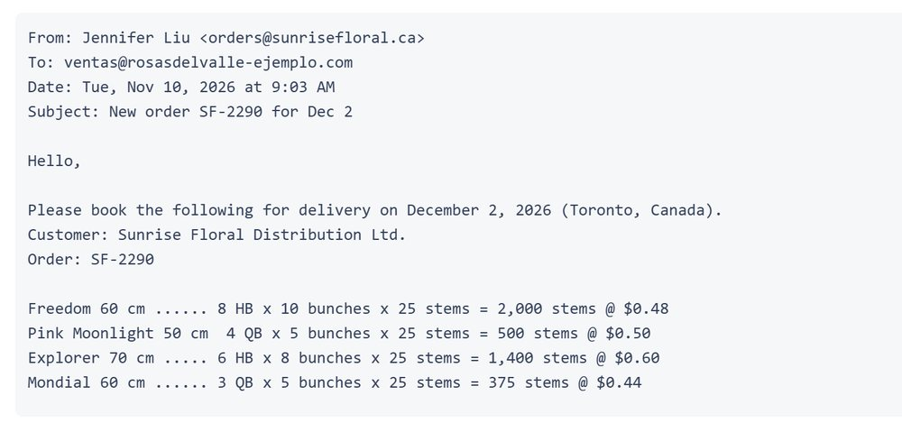
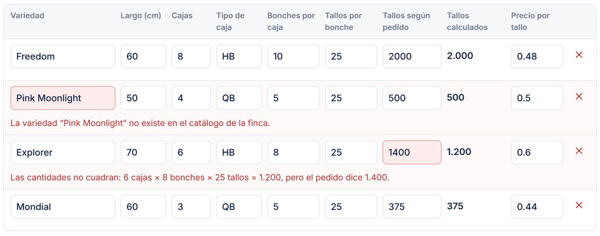
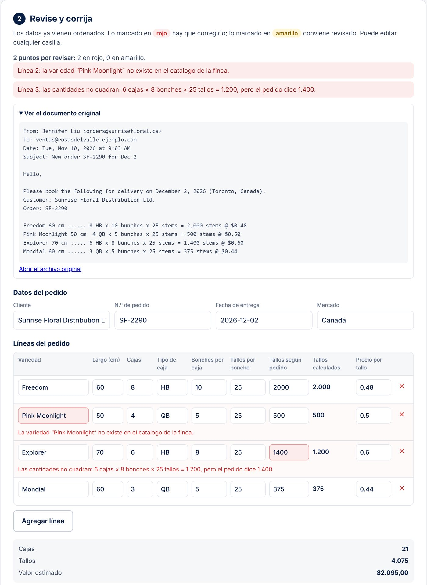

Consultoría de datos e IA para florícolas de Cayambe, Tabacundo y Cotopaxi. Trabajamos sobre el sistema que usted ya tiene.
Así llega el pedido

Así queda para revisar

Empezamos por lo que más tiempo le quita a su oficina. Nada se reemplaza: todo termina en el sistema que ya usa.
Vamos a la finca, vemos cómo llegan y cómo se cargan sus pedidos y documentos, y le entregamos por escrito qué conviene automatizar primero y qué no vale la pena.
Primer pasoLos pedidos de sus clientes, lleguen como lleguen, se leen solos, se revisan contra su catálogo de variedades y largos, y quedan listos para cargar en Komet, Unosof, AS2 o su Excel.
ExportadorasFacturas de proveedores, recepciones y liquidaciones: se leen, se revisan RUC, sumas e IVA, y lo que no cuadra queda marcado antes de pagar o de cerrar la liquidación.
Exportadoras y consolidadorasAnálisis de costos por variedad y bloque, y control de cartera por cliente, con los datos que ya tiene en sus sistemas y en sus Excel.
Nos cuenta cómo trabaja su oficina y qué documentos le quitan más tiempo.
Vemos sus pedidos, facturas y liquidaciones reales y le decimos por escrito por dónde empezar.
Arrancamos con uno solo, por ejemplo los pedidos. Su equipo lo usa y lo aprueba antes de seguir.
Ajustes, formatos nuevos de clientes y soporte, sin contratos largos.
Trabajamos con florícolas de Cayambe, Tabacundo y Cotopaxi y conversamos con quien hace el trabajo.
Todo termina en Komet, Unosof, AS2 o el Excel que ya usa.
Una persona revisa y aprueba cada pedido o documento antes de cargar nada.
Antes de ver un solo papel suyo, firmamos confidencialidad por escrito.
En la demo, suba un pedido de ejemplo: un correo en inglés, un WhatsApp desordenado o un Excel. Fuyu lo lee, lo revisa contra el catálogo y le deja una tabla para corregir y aprobar.

Una conversación por WhatsApp o en su finca para ver qué le quita más tiempo a su oficina.
Escribir por WhatsApp